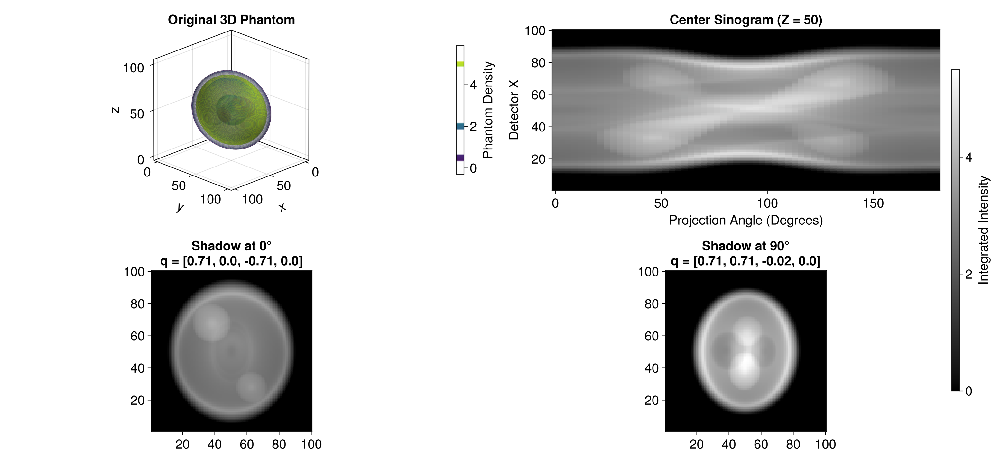

Mean Estimation
This section covers the estimation of the 3D mean function using the RKHS representer theorem and direct linear solvers.
Data Structures
HeteroTomo3D.EvaluationGrid — Type
EvaluationGrid{T<:Real}4D array of size (2, s, r, n) storing the detector coordinates for X-ray evaluation, i.e.,
\[\mathbf{x}_{ijk} = X[:, k, j, i] \in \mathbb{B}^{2}\]
Fields
block::Array{T, 4}: 4D array of size(2, s, r, n)for 2D detector plane coordinates.s::Int64: Number of evaluation points per view.r::Int64: Number of projection angles.n::Int64: Number of 3D functions.
Examples
julia> s, r, n = 20, 5, 100;
julia> block = rand(2, s, r, n);
julia> eval_grid = EvaluationGrid(block, s, r, n);
julia> size(eval_grid)
(2, 20, 5, 100)HeteroTomo3D.QuaternionGrid — Type
QuaternionGrid{T<:Real}Matrix of UnitQuaternion{T} of size (r, n) for singularity-free 3D rotation angles.
\[\mathbf{q}_{jk} = Q[k, j] \in \mathbb{S}^{3}\]
Fields
block::Matrix{UnitQuaternion{T}}: Matrix of size(r, n)containing the rotation geometry.r::Int64: Number of projection angles.n::Int64: Number of 3D functions.
HeteroTomo3D.BlockDiag — Type
BlockDiag{T<:Real}Block diagonal matrix representing the coefficients with respect to the tensorized basis functions for covariance estimation, i.e.,
\[\hat{\mathbf{B}} \in \bigoplus_{i=1}^{n} \mathbb{R}^{(s \cdot r) \times (s \cdot r)} \implies \hat{\mathbf{\Sigma}} = \sum_{i=1}^{n} \sum_{(j_{1}, k_{1})} \sum_{(j_{2}, k_{2})} \hat{B}_{i, (j_{1}, k_{1}), (j_{2}, k_{2})} \varphi_{i j_{1} k_{1}} \otimes \varphi_{i j_{2} k_{2}} \in \mathbb{H} \otimes \mathbb{H}.\]
Thread-safe pre-allocated buffers are included for zero-allocation mul! operations in Krylov solvers, to guarantee no heap allocations during multithreaded linear algebra operations.
Fields
block::Array{T, 3}: Saving the diagonal blocks[:, :, i], with each of size(s * r, s * r).s::Int64: Number of evaluation points.r::Int64: Number of projection angles.n::Int64: Number of 3D functions.temp::Vector{Matrix{T}}: Thread-local temp buffers formul!of lengthThreads.nthreads(), isolating memory per CPU core.iter::Int64: Iteration count for Krylov solvers, initialized to 0.
HeteroTomo3D.LazyKhatri — Type
LazyKhatri{T<:Real}Khatri-Rao product of Gram matrix K, i.e., K ⊙ K. Bypasses generating massive dense matrices by evaluating on-the-fly in the matrix-free manner. In other words, given a block diagonal matrix B = \operatorname{Diag}[B_{i}]_{i=1}^{n}, mul!(C, khatK, B) updates a block diagonal matrix C = \operatorname{Diag}[C_{i}]_{i=1}^{n} in-place according to the formula:
\[\mathbf{C}_{i} = \sum_{i'=1}^{n} \mathbf{K}_{i, i'} \mathbf{B}_{i'} \mathbf{K}_{i', i}\]
Fields
K::Matrix{T}: Base Gram matrix of size(s * r * n, s * r * n).s::Int64: Number of evaluation points.r::Int64: Number of projection angles.n::Int64: Number of 3D functions.
Examples
julia> s, r, n = 2, 4, 5;
K = rand(s * r * n, s * r * n);
khatK = LazyKhatri(K, s, r, n);
size(khatK)
(320, 320)Representer Theorem Solver
The mean function is estimated by solving the system $ (\mathbf{K} + \lambda \mathbf{I}) \mathbf{a} = \mathbf{y}.$
HeteroTomo3D.build_mean_gram! — Function
build_mean_gram!(K::Matrix{Float64}, X::EvaluationGrid{Float64}, Q::QuaternionGrid{Float64}, γ::Float64)Constructs the (s * r * n) x (s * r * n) Gram matrix K for the mean representer theorem. Iterates over functions (i), quaternions (j), and evaluation points (k), i.e.,
\[\mathbf{K}[k_{1} + (j_{1} - 1) s + (i_{1} - 1) s r, k_{2} + (j_{2} - 1) s + (i_{2} - 1) s r] = \langle \varphi(\mathbf{R}_{\mathbf{q}_{i_{1} j_{1}}} \mathbf{x}_{i_{1} j_{1} k_{1}}), \varphi(\mathbf{R}_{\mathbf{q}_{i_{2} j_{2}}} \mathbf{x}_{i_{2} j_{2} k_{2}}) \rangle_{\mathbb{H}}\]
HeteroTomo3D.solve_mean! — Function
solve_mean!(a::Vector{Float64}, K::Matrix{Float64}, y::Vector{Float64}, λ::Float64)Solves the regularized system (K + λI) a = y for the mean representer theorem.
3D Reconstruction
Once the coefficients $\mathbf{a}$ are found, the continuous 3D volume is reconstructed via the evaluation tensor action.
HeteroTomo3D.reconstruct_mean — Function
reconstruct_mean(a::Vector{Float64}, X::EvaluationGrid{Float64}, Q::QuaternionGrid{Float64}, m::Int, γ::Float64)Reconstructs the m x m x m 3D mean volume from the representer theorem coefficients a, i.e., computes
\[\hat{f}(\mathbf{z}) = \sum_{i=1}^{n} \sum_{j=1}^{r} \sum_{k=1}^{s} a_{i j k} \varphi_{\gamma}(\mathbf{R}_{\mathbf{q}_{i j}}, \mathbf{x}_{i j k})(\mathbf{z})\]
Computes the action of the evaluation tensor on a entirely on-the-fly to avoid massive memory allocations, strictly bound to O(m^3) space complexity.
Example
This example demonstrates the 3D X-ray transform applied to a 100x100x100 random Shepp-Logan phantom across 60 projection regular angles. To run this example:
Navigate to the
examples/directory in your terminal.Launch Julia and activate the local environment:
sh julia --project=.From the Julia REPL, run the script:
julia include("test_fwd.jl")
This will generate the interactive 3D visualization and save the output image forward_simulation.png to your assets folder. Here is the final layout showing the true 3D phantom density contours, the center sinogram, and the 2D integrated intensity shadows at 0° and 90°.
